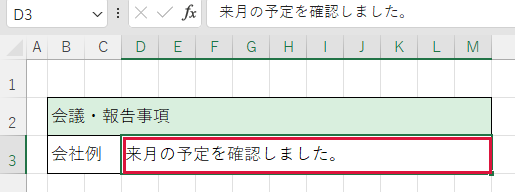

他社の報告を議事録にまとめたい

ヘルスウォーターと農産の報告は、それぞれの会社が作成した文章を使います。どちらか一社の原稿と、今回の統合用ファイルを開いて始めましょう。
① 統合先で、その会社の欄を見つける
- 今回の会議用の作業ファイルか、画面上部のファイル名と会議の日付を確認します。
- 「会議・報告事項」で、今から転記する会社の見出しを探します。見つからなければ画面下の別のシートも開きます。完成版によって会社名のある行は違います。
- 該当する本文欄を確認します。欄が見つからない、またはそこに別の報告があるときは、貼る前に担当者に転記先を確認します。
② 他社の原稿で、報告の文章をコピーする
- その会社の原稿に切り替え、会議の日付と報告の見出しを確かめます。
- 報告を一項目だけ選びます。Excelなら文章の入った欄をクリックし、画面上部の数式バーで必要な文字を先頭から末尾までドラッグします。
- 文字だけに選択色が付いたら Ctrl＋C を押します。
- Excelの数式バーで選んだ場合は、コピー元で Esc を1回押します。次は③ 統合先に貼り付けるへ進みます。
③ 統合先に貼り付ける
- ①で確認した作業ファイルに戻り、同じ会社の本文欄をクリックします。
- F2 を押し、文章を入れる位置で縦線が点滅していることを確認します。
- Ctrl＋V を押します。内容と位置が合っていれば Enter で確定します。間違いに気付いたら、確定前に Esc で取り消せます。
- 元の原稿と照らし合わせ、会社名・日付・数字・文末を確認します。次の項目、次の会社も同じ順で転記します。
保存前に確認
ヘルスウォーターと農産の報告がそれぞれの会社の欄に入り、出水酒造の記載も残っていますか。元の文章の抜けや二重貼り付けがなく、欄の罫線が保たれていれば、作業ファイルを保存します。